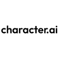

We help businesses like you build scalable AI solutions and customize your existing applications with advanced AI capabilities using Livekit. Livekit AI development allows you to seamlessly create customized AI products through highly innovative APIs and SDKs where you can transform your business with AI. Enable features in your applications like real time audio and video communication, streaming, audio inputs and text to speech seamlessly. Access our highly trained and experienced engineers to turn your business into a future ready, AI powered superpower.
-
-
-
-
-
-

-
-
-
-
-
-
Build Highly-Scalable AI Applications Using Livekit API Development
When you’re building applications using AI it is not always straightforward because a custom application using custom models is difficult to accomplish. With Livekit AI development you can seamlessly build advanced applications with AI capabilities using Livekit’s API. One major benefit of using Livekit APIs is that you can give your applications capabilities like low latency audio and video streaming, transmit real time data, connect with third party AI tools like OpenAI and design completely AI driven experiences quickly. This is a great solution for businesses looking to improve their customer support operations, increase customer engagement and collaboration within your teams. Build scalable tools capable of advanced video processing using AI with Livekit API for mobile apps, Livekit SDK for web apps and desktop apps.
LiveKit audio API Development
Our LiveKit audio API development services allow you to create applications that can accept audio input for AI, stream audio within your app and much more. Livekit AI development is a great solution for use cases like building voice chat apps, large scale customer support operations through audio, audio streaming platforms and healthcare apps for better accessibility.
LiveKit video API Development
Just like audio they are one of the AI companies that also provide you with Livekit video calling API that you can use to give your applications advanced video capabilities. This is a great solution for businesses looking to build products that need realtime low latency and high definition video, screen sharing, engaging video interfaces , broadcasting, video analytics and much more. Build scalable apps with Livekit.
Hire Livekit API Developer
Our Livekit AI development service includes a staff augmentation program where you can seamlessly integrate our developers into your team. As businesses we understand that scaling your operations can be challenging. We provide you with experienced and trained AI engineers with real world experience building solutions with Livekit and advanced AI platforms.
Media AI Development Company
Creating AI solutions for the media industry is a great step to reduce costs, streamlining content creation and improving the experience of audiences. Livekit has made this process much simpler with tools and resources that allow you to create advanced media solutions. Through Livekit AI development you can build highly scalable workflows and applications that use video and audio. We provide you with end to end services for AI agent development using Livekit where you can create video streaming services, virtual try-ons, live transcription solutions, e-learning platforms and much more. Bridge the gap between you and your audiences with help from our industry leading experts.
Audio to video AI Development
Livekit is a very intuitive platform that allows you to build applications that have advanced video capabilities. You can use Livekit AI development for real time synchronization of audio and video, dynamic switching between different media types, integrating spatial audio into your videos, advanced media controls and much more. Our end to end services are the missing piece in the puzzle you need to turn your ideas into visual reality.
Voice AI Development
One of the amazing capabilities of these types of AI agents is that it can understand and handle conversations using natural human language. This is where Livekit shines. Livekit’s solutions are used by some of the biggest names in the industry like OpenAI for enabling voice inputs for your AI models seamlessly. Through Livekit AI development you can create applications that can converse with humans using voice input, process and modify audio inputs, turn speech into text and much more.
Live Streaming AI Development
Livekit is the go to solution for various businesses that want to enable advanced live streaming capabilities in their applications. It offers low latency live streaming which you can integrate into your existing applications or build custom applications for your audience. Livekit also enables advanced features for live streaming like multiple stream outputs, real time audience interactions like reactions and chat, adaptive bitrate streaming for minimizing buffering and much more. Create head turning media solutions with our Livekit AI development services.
Livekit AI API development
The Livekit AI API is an advanced solution for businesses and brands that want to integrate cutting edge computer vision technology into their businesses. In today’s day and age security and data analysis are at the forefront of business growth. Using Livekit’s scalable APIs you can seamlessly integrate features like facial recognition, object tracking and video analysis into your applications. This has a whole world of possibilities for businesses operating in various sectors. Examples for how Livekit AI development can be applications for border security officers and airports officials to recognize people, real time traffic surveillance that can track objects, forensic video analysis for incident investigations and many more. Another great thing about this technology is that you can implement these features into your applications faster using Livekit’s APIs instead of building your solution from scratch.

LiveKit AI API integration
Seamlessly connect prebuilt AI models from popular providers like OpenAI, AWS and Google AI using Livekit’s AI API integration. Our Livekit AI development cover the entire Livekit ecosystem from end to end helping you build applications that are capable of features like real time speech to text and captions, monitoring of video streams for inappropriate content, adaptive media control to optimize video quality during streaming and customizations to tailor the solution just for your business.
Livekit Real time AI API for Video
Apart from facial recognition which is at the forefront of security today we can also build you solutions using Livekit that have the capabilities to detect gestures, track motion in live video streams, segment video content easy access, scene detection for security and gaming and real time alerts in live video feeds. Livekit AI development is a flexible solution for businesses and brands looking to leverage advanced capabilities of AI and media and transform their customer experience while reducing their AI development cost.
Livekit AI Chat API Development
Customer support and customer engagement are areas where you can extensively implement Livekit AI chat API effectively. The benefit of using a chatbot for your customer service operations is that you can seamlessly respond to customer queries in real time on a 24/7 basis. Livekit’s chat API is a great solution for businesses looking to leverage Livekit AI development for building AI powered chatbots and assistants, multilingual language translation features, sentiment analysis engines that can understand user sentiment to provide tailored conversations, and much more.
Livekit Server SDK
The Livekit Server SDK is a powerful resource for you to build scalable applications using the Livekit platform and it can be very rewarding for businesses. Seamlessly build scalable real time communication backends with server side control, programmatically manage participants and sessions in video and conferencing, customize your application with automated actions which can trigger through a user action and many more use cases like this. Livekit AI development can also help you create advanced audio and video workflows like creating and modifying audio and video pipelines, recording and transcoding media and implementing token based authentication systems for ensuring the security of communications.
Livekit API Server Integration
We help you seamlessly connect Livekit’s APIs to existing server systems that you have for real time communication, automate tasks like room creation, user management and media streaming configurations. You can also enhance your custom application’s capabilities by integrating third party APIs using Livekit’s tools. Additionally, you can make performance optimizations with our Livekit AI development services where you can use APIs to manage your resource allocation and server side operations.
Livekit Real-Time Video Server SDK
Scalable video processing is one of the major benefits of the Livekit suite especially for large scale applications. Along with this we can also build you applications that can record video streams directly on your server for compliance, direct and customize video streams for multiple users and roles, implement advanced video encryption for security and stream your videos to multiple destinations and live audiences. Our end to end Livekit AI development has got you covered from the get-go.
Livekit SDK for Backend
Managing your backend services is a breeze with Livekit and you can seamlessly manage media streams, room configurations and participant controls directly from the server. Additionally, you can integrate your application with custom databases where you can store and manage session data, your user stares and your recordings seamlessly. Another major benefit of using Livekit is that you can embed custom logic into your backend where you can easily facilitate real time communication for your users.
Livekit Client SDK Development
Client SDK development is also part of our Livekit AI development services where you can build highly responsive user interfaces for your audio, video and chat applications. A great feature of Livekit is that you can develop SDKs that work across multiple platforms like web, mobile and desktop easily. Personalizing media controls is also easier than ever with Livekit SDK for iOS and Android and you can create custom user experiences through different layouts and interactions for your users. Additionally, Livekit also allows you to optimize your client SDKs where you can facilitate real time communication with minimal latency for a seamless user experience.
Livekit Mobile Client SDK Development
When you’re creating an app for your users you can’t forget that the majority of people out there use mobile for accessing applications. Our Livekit AI development covers product engineering for multiple platforms including mobile where you can create mobile friendly SDKs for iOS and Android. You can also build advanced media streaming applications that are adaptive for different network conditions, implement gesture controls for an intuitive user experience, integrate mobile notifications for users and even optimize your app to use less battery with Livekit mobile client SDK.
Real-Time Video Client SDK
The real video client from Livekit is a powerful tool that you can use to enable features like dynamic layouts, video filters and augmented reality for video calls improving your overall user engagement. The other range of benefits of Livekit AI development and Livekit video chat client include managing video streams, spotlighting speakers on video call. Muting participants of a video call in real time, connecting users from across platforms like web, mobile and desktop simultaneously and much more. In addition to this you can also create custom branding and interactive layouts to supercharge your user experience.
Livekit WebRTC Client SDK
Building custom applications that can facilitate real time communication through audio and video is now within your reach and you can use WebRTC protocols for seamless media transmission with Livekit. Additionally, Livekit AI development also allows you to enable advanced features like streaming videos directly between users in a peer to peer manner, auto adjusting media quality based on network conditions of users, dynamically managing bitrate, creating AI sales tools resolution and streaming prioritization and many more features like this with Livekit webRTC client SDK and Livekit webRTC server SDK.
Livekit Client Integration Services
We extend our services to Livekit client integration which is a great way to build custom applications and workflows for multimedia using AI. You have a lot of flexibility with Livekit where you can integrate client SDKs, design advanced customized workflows for your business needs, connect Livekit with external APIs and access features like analytics tools and CRMs, and much more. Additionally, we also provide quality assurance, maintenance and upgrades for applications that you have already built using Livekit AI development. The possibilities with Livekit are endless and you are only limited by your imagination.
Livekit Client SDK Integration
Our Livekit client SDK integration services for Livekit helps you as a business to rapidly integrate SDKs for audio, video and data streamlining quickly. This quick deployability is an amazing benefit that you get with Livekit along with a host of other benefits. For instance, you can seamlessly connect Livekit features with the existing frontend components that you have already built, you can extend the SDK functionality and create custom features that are tailored to the needs of your business and you can seamlessly allow for real time updates across your client and server with Livekit AI development.
Livekit Real-Time Client Data
Low latency data streaming is one of the transformative benefits of the Livekit platform where you can share data between participants in real time like for example chat messages and live polls. Additionally, like you may see in popular communication apps you can enable private and public data channels to give your users a seamless user experience. The integration is extremely light weight as well which allows you to use real time data with minimal impact on the performance of your application.
Our Livekit AI Development Services For Future-Proof Businesses
Livekit AI development is a powerful thing for businesses looking to transform their customer experience and build products that customers will love. Businesses in the age of AI cannot afford to get left behind with their legacy systems because the world around them is moving at lighting speed. Many businesses understand this and it is why world leading brands are using Livekit’s flexible and powerful tools to build customized solutions for their users. Livekit’s advanced media processing capabilities provide a seamless way for you to enhance your applications through Livekit AI development. With a host of resources like APIs and SDKs Livekit is empowering businesses to be future proof and this is where we come in.
Our experienced team of engineers, architects and designers has the capability to help your business make the most out of it. From the initial stages of engagement to full cycle product development our industry leading team of experts is exactly what you need to leverage the power of AI to your business’s advantage. To transform your business with advanced AI applications capable of handling and processing real time audio, video and data book a call with our consultant today and get started with one of the top AI development companies.
Talk to an Expert
Automate your video production and enhance content creation workflows.